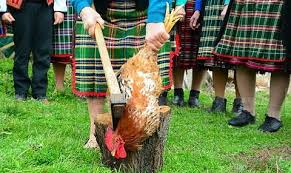
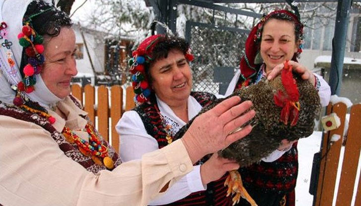
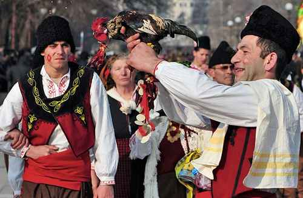
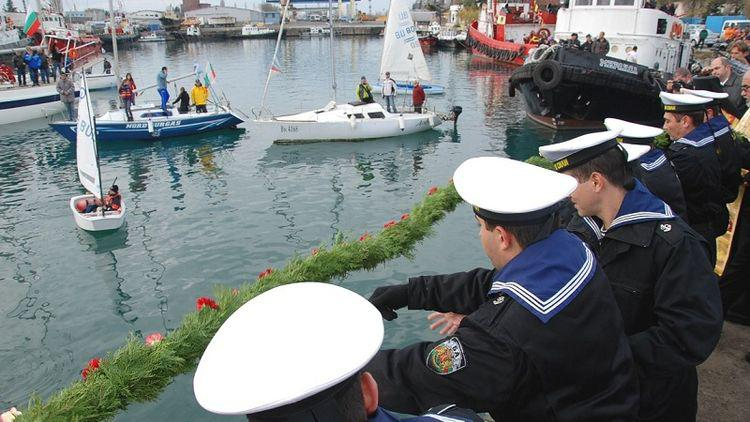
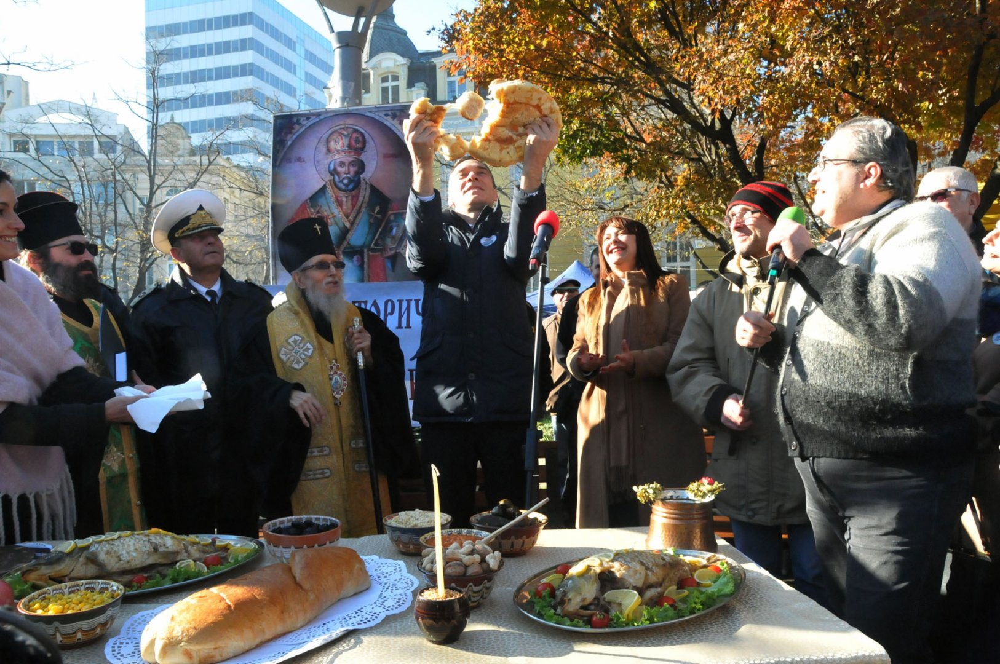
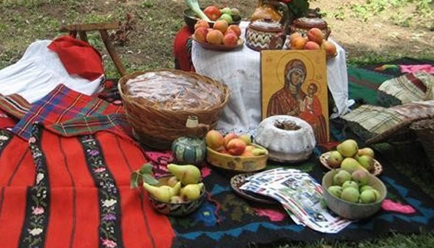

Бургас-Традиции и обичаи
Петльовден
| Петльовден е познат в съвремието като Ден на геврека и е придобил закачлив характер. Основна традиция на този ден е да се заколи петел във всяка къща, в която има момченца, където са само момиченца - за курбан отива някоя ярка. Жертвената птица се заколва на прага, като стремежът е кръвта и да изпръска наоколо. | Закланият петел се сготвя, от него се раздава на съседи за здравето на момчетата - продължители на рода. С кръвта на закланата птица по челата на момчетата се прави кръстен знак, за да бъдат живи и здрави. Главата на птицата се оставя на портата, а перата се запазват и използват при болести на децата. | Къща без петел не бива - ще запустее. Традиционната храна за празника са т.н. тиганици, кравайчета, пресни питки, зелник и каша. В миналото през целия ден на този празник не се работи, а на някои места жените се събират на веселба. „Петловден кат Бабинден, ама са коли петел и на бабата са носи къделькя.“ |
|  |
 |
 |
Никулден
| 6 - ти декември - ден на Свети Никола и патронен празник на град Бургас. На 6-ти декември умира епископът на Мира - Николай Мирликийски, най-популярният светец на християнската църква, почитан от всички религии и езичници като Чудотворец, повелител на морските стихии, покровител на моряците и рибарите. През целия си живот се отказва от материалните облаги и ги раздава на бедните. По време на пътуването му до Божи гроб силна буря застига кораба и убива един от моряците. С кротка и искрена молитва към Бога Свети Николай успокоил морето и възкресил убития моряк. |  |
|  | В българската православна традиция светецът Николай, чието име означава „Побеждаващ“, се почита и като патрон на рибарите. Според народно-християнския мит за подялбата на света, нему се паднали моретата, реките, езерата. Той е господар на целия подводен свят – рибите и водните демони. На този ден се украсяват коледните елхи, а на трапезата се поднася риба, чието тяло е покрито с люспи. Hа този ден вечерта на децата се правят малки подаръци, които се скриват в обувки или чорапи, за да ги намерят на сутринта. |
Петровден
| На този ден се коли „петровско пиле”. Рано сутринта жените носят в черквата колак и ранни ябълки - петровки. Осветени от свещеника, те носят здраве. На този ден не бива да се върши важна земеделска работа. При суша се прави молебен за дъжд. По традиция на Петровден на трапезата се нарежда празнично ястие „бял мъж” или „кутмач” (бито прясно сирене, пържено с брашно), петровското пиле, прясна пита, баница с масло и сирене, тиквеник. Жените отнасят в църквата обреден колак и първите узрели ябълки петровки, за да ги освети свещеникът. После ги раздават за здраве, особено ако в семейството има починали деца. Това вярване е свързано с народните представи за райската градина. |  |